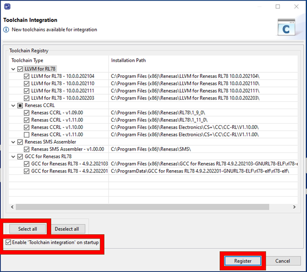

Here we will guide you through opening e2studio and creating a workspace.
2.1 - Startup
Firstly start e2 studio either via the start menu, desktop shortcut or manually using the executable in the install location.
2.2 - Workspace
After some initial loading the workspace dialog will appear. This dialog can be used to select an
existing workspace or new one.
A workspace is a project staging area, much like the solution area of visual studio and it contains
one or multiple projects.
These projects can reference other projects within the same workspace using workspace relative
paths.
The workspace folder also contains some meta-data specific to e2studio and this is version
dependent.
Typically a shorter path length to your workspace is a good idea - the image below shows an example
workspace path.
By selecting browse, you can browse to the appropriate location and also create a new folder to
house your workspace.

Finally click on launch when you are happy with your workspace location.
2.3 - Toolchain Registration
When starting e2studio for the first time you may be prompted to register the installed
toolchains.
Please ensure you select all toolchains available and register them - this allows e2studio to
use these toolchains in any projects moving forward.

Specifically those selections are:
- Click "Select All"
- Check "Enable 'Toolchain integration' on startup"
- Click "Register"
2.4 - My Renesas Login
e2studio may prompt to provide MyRenesas login credentials - this will faciltate acquiring
extra-tools/plugins/update later.
As shown in the image below, proivde your login credentials, decide whether you would like
Renesas to collect usage data to improve our products and services and login.

2.5 - Welcome Page
Finally you will be presented with the welcome page.